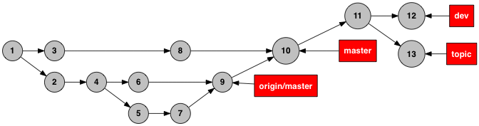
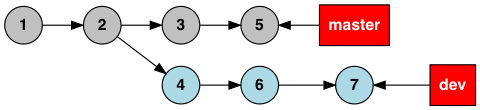
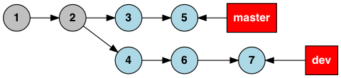
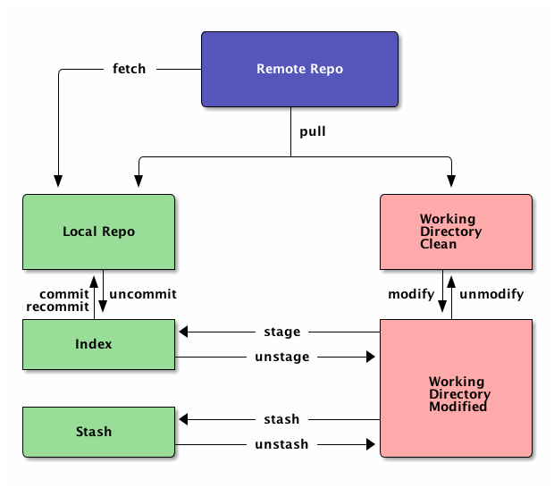
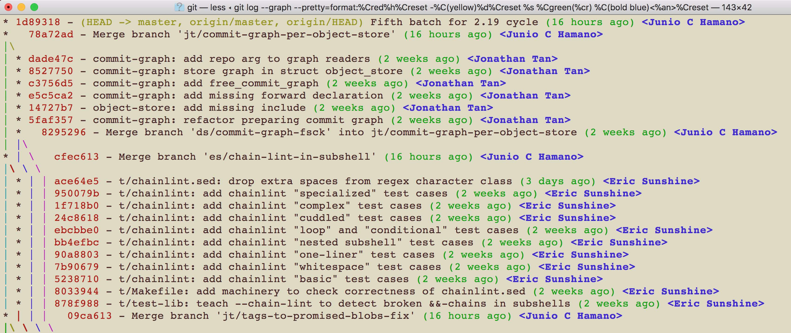
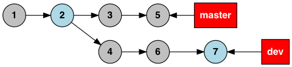
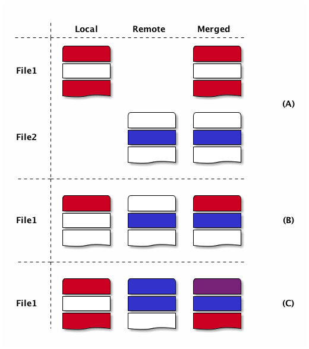

Being More Productive with Git
Twenty percent of Git you need to know to do eighty percent of the work efficiently
Table of Contents
Git is the most popular Version Control System (VCS) used by many software developers on projects of any scale. Most developers use Git on a daily basis, without having a deep understanding of how it actually works. You can significantly boost your productivity with a little more understanding of the Git workflow and how Git, as a distributed version control system, operates to manage repositories. My attempt, in this blog post, is to present minimal information you need to know to maximize your productivity with Git. For more detailed information, the reader may refer to Pro Git, which covers topics ranging from basic and intermediate levels, such as branching, merging, and rebasing, to advanced ones, such as rewriting history and working with submodules.
History of Git
Git was born out of frustration. The Linux development community had been using BitKeeper from 2002, however, its free license was revoked in 2005. The community decided to build a new version control system (VCS). Linus Torvalds, the creator of Linux, took initiative in this development. From the lessons learned over the three years of using BitKeeper, Linus was exactly aware of all the requirements and how to design a good VCS. The result was Git, which evolved over the years to be the most popular and most powerful VCS, employed in many projects of various scales across the world.
Distributed vs. Centralized
There are two types of version control systems: centralized and distributed. In a centralized system, like Subversion, changes are committed into a central repository on a remote server. Such a model has several drawbacks. First, the server may fail risking the whole repository. Therefore, a certain strategy must be developed for fault tolerance by means of redundancy, for example. Second, the server may temporarily be down, causing interruption among all users. Third, history of changes are only stored in a main remote repository. As a result, network connection is always required to check the history of commits.
In a Distributed VCS, like Git, each user has an exact copy of the remote repository. Such a model is fault tolerant, and every developer work mostly on a local copy of the repository offline. This model offers many other advantages. For example, modification can be split logically into separate commits. Once the work is completed, multiple commits can be pushed to one or more remote repositories. We do not need constant network connection to investigate the history of changes, since our local repository holds all the history of commits.
Git as a distributed VCS offers even more advantages. Branching is lightweight and merging is easy. This makes it possible to frequently diverge from the main branch, add a feature or fix bugs, and easily merge (or rebase) onto the main branch. Sometimes, we are in the middle of changes and not ready to stage or commit our changes, but we urgently need to fix a bug. Stashing is a great tool that stores changes temporarily, so we can fix the urgent bug first, and then apply the stash to our working directory and continue working.
Setup
To be more efficient with Git, I recommend using command-line tools with a proper setup to easily inspect the working directory and log history, check local and remote branches, and monitor modified, staged, or stashed files. In addition, using command-line tools, we can also fetch or pull updates from remote repositories, or push our updates to them.
User specific configurations are stored in the $HOME/.gitconfig file. An example is given below:
# $HOME/.gitconfig file [user] name = My Full Name email = myname@example.com [core] editor = vim [alias] lg = log --graph --decorate --oneline lga = log --graph --decorate --oneline --all st = status -s br = branch co = checkout
The name and email address of the committer are set in this file, either directly or using git config --global command as follows:
git config --global user.name "My Full Name"
We can specify our editor of choice in this file, too. The editor will open when there is an automatic merge or when we use git commit command without providing a message. We can also define aliases for some git commands with options for convenience. In particular, git log --graph --decorate --oneline and its many variations are useful when inspecting the log history and commits graph.
Git Notations
Git is a version control system that stores a series of coherent changes as a commit represented by a SHA-1 value, like 62840ed60259dca2bc90862672a663a9dcfe17b5, whose abbreviated version 62840ed is often used. When inspecting history of changes, we see a list of commits and connections among them to understand how a repository evolved over time.
Starting from the initial commit, we may diverge to multiple branches and merge later at some points in the future. Each commit may have one or two ancestors and multiple predecessors. Such relations among commits constitute a directed graph, which may look like Figure 1.

Figure 1: Commits graph with 13 commit nodes and 3 local branches master, dev, and topic pointing to commits 10, 12, and 13, respectively, and one remote-tracking local branch origin/master pointing to commit 9.
Any commit can be referenced by its unique SHA-1 value. However, some commits may represent the tip of a branch and thus named like master or origin/master. Some commits may be labeled as a tag to indicate that the commit is a particular version like v1.0.2. There are also predefined names, like HEAD, origin/HEAD, FETCH_HEAD, and symbols, like @, @^, @~3, which are updated by Git to refer to special commits, like the current position. Note that pointers can move from one commit to another, but commits constitute history and (almost always) do not change.
Ancestry References
Notations ^ and ~ are used to point ancestors of a given commit. Each commit has only one parent except merge commits which have two parents. To access either parent of a merge commit, we use ^ notation. To access ancestors (parent of the parent of the parent, for example), use ~ notation. More details are given below:
HEAD^is equivalent toHEAD^1and means the first parent ofHEAD. Merge commits have two parents: first parent, which isHEAD’s previous position, and the second parent, which is merged onto the other branch. The second parent can be addressed asHEAD^2. Note thatHEAD^3does not have any meaning, since a commit cannot have more than two parents.HEAD~is equivalent toHEAD~1and means the first parent ofHEAD. Thus,HEAD^andHEAD~are equivalent too. However,HEAD~2means the first parent of the first parent.HEAD~5is meaningful and similarly defined; it is also equivalent toHEAD^^^^^.
The following examples illustrate how ^ and ~ notations can be used to access ancestors of a given commit in Figure 1.
dev^anddev~both point to commit 11. They both mean the first parent ofdev. If the commit-id ofdevis62840ed, then62840ed^can also be used instead ofdev^.dev^2is not meaningful, sincedevis not a merge commit.master^1points to commit 8, whilemaster^2points to commit 9, as doesorigin/master.topic~3points to commit 8, andtopic~2^2points to commit 9.
Commit Ranges
Git provides space (A B), double-dot (A..B), and triple-dot (A...B) notations to specify a range of commits, or better put, a set of commits. Commit ranges are used in the git log and git rev-list contexts. Although used in git diff, they do not really mean ranges, as explained in Section Differences between Two Commits.
git rev-list master devlists, in reverse order, all the commits on branches ending to bothmasteranddevcommits, as shown in Figure 2. It is commutative, i.e.,git rev-list dev masterproduces the same output. This is typically not a very interesting case.git rev-list master..devlists, in reverse order, all the commits fromCtodev, whereCis the common ancestor ofmasteranddev, as shown in Figure 3. Note that the list excludesCbut includesdev. It is not commutative, i.e.,git rev-list dev masterproduces a different output.git rev-list master...devlists, in reverse order, all the commits fromCtomasterordev, whereCis the common ancestor ofmasteranddev. Note that the list excludesCbut includesmasteranddev, as shown in Figure 4. It is commutative, i.e.,git rev-list dev...masterproduces the same output.
The command git log uses the commits produced by the git rev-list command to show the history associated with those commits.
Figure 2: Commits in blue are listed in the output of git rev-list master dev command.

Figure 3: Commits in blue are listed in the output of git rev-list master..dev command.

Figure 4: Commits in blue are listed in the output of git rev-list master...dev command.
Git Workflow
In this section, we will review the basics of the Git workflow. To better understand how Git actually works, it is important to know the following entities:
- Remote Repository
- Users clone from this repository and push their changes so others can retrieve and integrate with their changes. For example, https://github.com/golang/go.git is a remote repository which is publicly available for downloading. A remote repository can be just a bare repository, meaning that it may not contain a working directory, but does hold enough information to generate one.
- Local Repository
- After cloning, users have a full copy of the remote repository where they can inspect history of commits, make changes, commit and push them into the remote repository. All the repository information is downloaded into the
.gitdirectory. When changes are committed, the local repository is updated. However, the remote repository is still not affected unless the committed changes are pushed. - Working Directory
- When cloning a repository, we get a full working directory beside the
.gitdirectory inside it. Every time we fetch from remote, we update the local repository, but the working directory is untouched. However, when we pull data from remote, we update both the local repository and the working directory. We will see that pulling means fetching and merging.
The diagram in Figure 5 shows an overview of the most common interactions among above three entities. In Table 1, Git commands associated with all the actions are listed. More details about Git commands are provided in Section Git Basic Commands.

Figure 5: Git workflow: interactions among working directory, local and remote repositories.
| action | git command (Example) | Description |
|---|---|---|
| fetch | git fetch origin master |
|
| pull | git pull origin master |
fetch then merge |
git pull --rebase origin master |
fetch then rebase | |
| commit | git commit -m"description of this commit" |
|
| recommit | git commit --amend |
modify last commit |
| uncommit | git reset --soft HEAD |
|
| stage | git add -A |
|
git stage -A |
||
| unstage | git reset HEAD |
|
| stash | git stash |
|
| unstash | git stash pop |
remove stash record |
git stash apply |
keep stash record | |
| unmodify | git reset --hard HEAD; git clean -df |
changes lost |
git checkout -- .; git clean -df |
changes lost |
Git Basic Commands
In this section, we will review the most frequently used git commands in most common situations.
Create or Clone a Repository
A local repository with a working directory may be cloned from a remote repository or created from scratch. To clone the Go language repository, for example, we simply run:
git clone https://github.com/golang/go.git
To start a new project, we may create a repository in GitHub (or any similar host) first. GitHub typically provides instructions on how to setup a local directory for the repository, similar to the code below. First, navigate to the directory and create files with contents. Then, run the following commands to add and commit changes, create a link to the remote repository and push the commits.
git init # make changes in this directory git add -A git commit -m "first commit" git remote add origin https://github.com/myaccount/myrepo.git git push -u origin master
Some of these commands will be discussed in more details later. For now, it suffices to know that git init initializes the current directory as a Git repository by creating .git directory, where Git stores all its internal data. It automatically creates a branch called master. The command git add stages all the changes made in the local directory and git commit commits the staged changes into the local repository. Then, we create a remote reference called origin using git remote add command. Finally, we push the changes in our local master branch to the remote master branch using git push command.
A Git repository, whether local or remote, keeps all its data in the .git directory. Repository-specific configurations are stored in .git/config file. We can copy .git directory anywhere, and the folder containing it become a git repository. We can even clone it like git clone ~/myrepo/.git somewhere to duplicate the repository. Although may not be useful, they verify that all the repository information are stored in the .git directory.
Four States of a Local Repository
In Git workflow, we are in one the following states:
- The local repository is up-to-date and identical to the remote one, and the working directory is clean.
- Working directory is modified, but changes have not yet been staged.
- Changes are staged, but have not yet been committed.
- Changes are committed, but have not yet been pushed to a remote repository
Once the local changes are pushed to a remote repository in State 4, we return back to the State 1.
Suppose that we cloned a repository a while ago. Before making any changes, we use git pull command to make sure it has the latest commits. We are now at State 1.
Once we start making changes on the working directory, we transition from State 1 to State 2. We can inspect changes using git status -s command and the result may look like:
$ git status -s M README.md ?? test.go
The inspection shows that the file README.md is modified but not staged, while test.go is not yet in the repository. To see more details of the changes in the files, we can run git diff as follows to see where in the files are modified.
$ git diff diff --git a/README.md b/README.md index 83c831f..89e7b14 100644 --- a/README.md +++ b/README.md @@ -1 +1,2 @@ # test +test.go implements a test program
As it can be seen, we added a line in the README.md file.
To undo the changes, we can run either git reset --hard HEAD or git checkout -- . command. Note that untracked files may be in the working directory, which can manually be removed using Linux’s rm command or Git’s git clean -df command. These commands are dangerous as they wipe out all the changes which are not saved in the history of the Git repository. As a word of caution, make sure to run git clean -dfn command first for a dry-run to list all the files that are going to be deleted.
Once we complete our changes, we need to stage them using git add command and transition from State 2 to State 3. Note that the sub-command add for staging is a bit misleading. That is why there is an alias for it: git stage, as you may have guessed. We can stage modified files one by one, or use option -A to stage all the changes. As before, we can check the status using git status -s command.
$ git status -s M README.md A test.go
The inspection shows that the file README.md is modified and staged, and test.go is newly added and staged. After changes are staged, git diff will not show anything. To see the details of file changes after staging, we should use git diff --cached command. To see all the staged and unstaged changes, we can run git diff HEAD command. For more use-cases of the git diff command, refer to Section Differences between Two Commits.
To unstage changes, we can use git reset HEAD. As we will see later, reset is a useful sub-command, but caution must be taken when using it, as it may erase all the changes.
After changes are staged, we can commit them using git commit command. It’s often followed by -m option to provide a message as string, explaining what changes the commit includes. Once the changes are committed, the status will be clean and git status -s will return nothing.
To undo the last commit, we can run git reset --soft HEAD~ command. As you may have guessed, the command git reset HEAD~ undoes both the commit and staging the changes.
After committing and before pushing, we may realize that we have forgotten some changes. In such a situation, we can easily amend our changes to the last commit using git commit --amend command. We will be prompted to update the commit message in an editor, like Vim. Once we save and exit the editor, the changes will be applied. If we do not wish to update the commit message, we can run git commit --amend --no-edit command.
Summary
In summary, we have four states for a local repository and can move between states as follows:
- Start coding and modify the repository as you wish.
- Stage changes using
git addorgit stagecommand. - Commit staged changes using
git commitcommand. - Push committed changes to a remote repository using
git pushcommand and return to a clean working directory.
To undo above changes, we mainly use the dangerous-looking git reset command as follows:
- To undo the last commit and move to the staged state, run
git reset --soft HEAD~ - To redo the last commit by amendment, run
git commit --amend --no-edit - To undo the staged changes and move to the modified state, run
git reset HEAD - To undo the modification and move to the clean state, run
git reset --hard HEAD. We may need to rungit clean -dfto clean up the untracked files and directories.
To inspect changes in the local repository, we can use the following commands:
- Run
git status -sto obtain a short status of the modified or staged files. - Run
git diffto see more details of the file changes before they are staged. - Run
git diff --cachedto see more details of the file changes after they are staged.
Branching
Branching mechanism is one of the best features of Git. It is so lightweight, fast, and efficient that is used on a daily basis. Branching is used to temporarily diverge from the main branch, like master, to fix bugs or add new features in a new branch, like dev. The new branch, containing all the local changes, is integrated with the main local branch by merging or rebasing, which is discussed in more details in Section Rebase vs. Merge.
In this section, we will discuss branch types and how to create, delete, and inspect branches. We will also review the most frequently used git commands related to branching.
There are three types of branches:
- Local branches, like
master. - Local remote-tracking branches, like
origin/master. - Remote branches, like
remotes/origin/master.
To see all the local and remote branches, use git branch -a command. A typical output may look like:
$ git branch -a bug-fix dev * master remotes/origin/HEAD -> origin/master remotes/origin/master remotes/origin/dev
As the output shows, there are three local branches (bug-fix, dev, and master), with master being the currently checked-out branch. In addition, there are two remote branches (dev and master). We will focus on working with local branches here and discuss remote branches in Section Remote Repository. To list remote-tracking branches associated with certain branches, run git branch -vv command.
We can switch between local branches using git checkout command. For example, to switch to the dev branch from the master branch, we run git checkout dev command.
To check out a remote branch, however, we can create a local branch to track the remote one. Suppose that we need to review the changes of a colleague on a different remote branch. We can checkout the remote branch as a new local branch as follows:
git checkout -b review-steve origin/steve
This command creates a new local branch review-steve, which points to the remote-tracking branch origin/steve, and switches to it.
Suppose that the master branch is up-to-date, and we would like to add a new feature to our project. A typical workflow is to create a new branch, temporarily diverge from the master branch, commit changes, and apply (merge or rebase) changes to the master branch. To create a new branch feature and switch to it, we use git checkout -b feature command.
To delete a local branch, use git branch -d dev command. This fails if the dev branch is not yet merged, since all the commits on this branch would be lost. Such branches can be forced to be deleted using git branch -D dev command.
Deleting a local branch does not affect its associated remote-tracking branch. For example, suppose that origin/dev is a remote-tracking branch associated with dev. To delete a remote-tracking branch, run git branch -d -r origin/dev command. Note that deleting a remote-tracking local branch does not affect the remote branch. We will see in Section Remote Repository how to delete a remote branch.
Rebase vs. Merge
Rebasing and merging are two different approaches to converge from one branch to another and integrate them. Suppose that we diverged from the master branch by creating a new branch dev and adding a few commits. Before updating master with our changes in the dev branch, we run git fetch to make sure the master branch is not behind its remote counterpart.
To integrate our changes, we can switch to the master branch, and run git merge dev command. There might be conflicts that should be resolved, which will be discussed in more details in Section Resolving Conflicts. Merging often results in adding a merge commit that shows where two branches are converged, unless it is fast forwarded. Note that fast-forwarding happens only if dev branch is on the same line but ahead the master branch.
Another way to integrate our changes is to rebase dev onto master which takes all the changes from dev and applies them on top of the master branch. This results in a neater history and is a preferred approach. To perform rebase, switch to the dev branch and run git rebase master command.
NOTE: Rebasing often results in a cleaner history of commits than merging. However, there is case that can have unpleasant consequences: rebasing remote branches onto another one and pushing the final commits rewrites the history. As a general rule, always use rebasing to rebase a local branch onto another local or remote branch.
In summary, we can integrate branches by merging or rebasing. We should prefer rebasing over merging as it results in a neater history of commits. However, bear in mind that only local branches should be rebased onto the remote-tracking branching and not the other way around. The following approaches are equivalent and preferred approaches:
- Run
git fetchto update remote-tracking local branches. Then, rungit rebase origin/masterfrom themasterbranch to rebasemasteronto theorigin/masterand integrate them. - Run
git pull --rebase origin masterto pull from the remote repository into themasterbranch with rebasing.
Stashing
Suppose that we are in the middle of some changes to our project. The build is broken so we do not want to commit the changes yet. However, we receive a message that we have to fix an issue urgently. We do not want to lose the changes, but we want to save it so that we can retrieve them after the bug is fixed. Stashing is a great tool in such a situation.
To stash current changes, run git stash command. Then, run git stash list to see the list of all changes that are stashed. A typical output of the latter command may look like:
$ git stash list
stash@{0}: On dev: division
stash@{1}: WIP on master: db2ac73 added add.go file
The list shows that there are two stashed changes: one on the dev branch and another on the master branch. To inspect each stash point, run git stash show stash@{1} command.
After stashing, the working directory is clean and we can perform our urgent fix on the project, commit the changes, and push them. Then, run git stash apply to apply the last stashed change back to the working directory and continue coding. To apply a particular stash, we can run git stash apply stash@{1} command.
The stashed data will still be there, but can be removed using git stash drop stash@{1} command. If the stash reference is not specified, it drops the top stash, which is stash@{0}. The shortcut to apply and drop a particular stash is git stash pop @stash{2} command.
Note that newly added, modified, and staged files can be stashed. When retrieved, they will retain their previous states. Untracked files will not be stashed, though. To stash untracked files as well, run git stash -u command. To stash even ignored files as well, run git stash --all command.
Remote Repository
To publish our local committed changes, we need to push them to a remote repository that is accessible to other users. In this section, we will learn how to work with one or more remote repositories. Git commands related to remote repositories and branches start with git remote.
To see all the remote repositories, run git remote -v command. A typical output with one remote may look like:
$ git remote -v origin https://github.com/eissana/test.git (fetch) origin https://github.com/eissana/test.git (push)
To update a remote URL, use git remote set-url command. For example, to avoid being prompted to provide username when fetching, pulling, or pushing, we can update the URL as follows:
git remote set-url origin https://eissana@github.com/eissana/test.git
We will still be prompted to provide password every time we want to access a remote repository. To simplify this, we can run git config --global credential.helper 'cache --timeout=300' to avoid password interruption for five minutes.
The reference name for the remote repository is origin, by default, but it can be renamed. To get more details about the origin, run git remote show origin command. The output of this command may look like:
$ git remote show origin
* remote origin
Fetch URL: https://github.com/eissana/test.git
Push URL: https://github.com/eissana/test.git
HEAD branch: master
Remote branch:
master tracked
Local branch configured for 'git pull':
master merges with remote master
Local ref configured for 'git push':
master pushes to master (up to date)
As we have seen before, to list all local and remote branches, we can run git branch -a command. Suppose that we have a local branch dev. The first time we run git push origin dev, a remote branch remotes/origin/dev is created. Local dev branch is not tracked by the remote branch, unless we specify it when pushing to it for the first time as git push -u origin dev. In this case, a local remote-tracking branch origin/dev is created.
We have previously discussed how to delete a local and remote-tracking local branches. They do not affect the remote remotes/origin/dev branch. To actually delete the remote branch, run git push origin --delete dev command.
It is possible and often useful to push changes from a local branch, like dev, to another remote branch, like origin/master, which does not track dev. This can be achieved by simply running git push origin dev:master command.
To get data from a remote repository, we may use either git pull or git fetch command. If the repository is clean and we have not made any changes or commits, then git pull is the simplest way to obtain and apply remote changes into our working directory. Otherwise, it might be a better idea to first fetch the changes without affecting our working directory, then use git log command to inspect the history of changes before applying them into the working directory.
The main difference between git pull and git fetch is that the latter fetches all the remote changes into the remote-tracking local branches, like origin/master, without affecting the working directory. However, the former downloads all the remote changes and applies them into the working directory. In fact, in a clean working directory, the effect of running git fetch origin master and then git merge origin/master from the master branch is the same as running git pull origin master command.
Performing git fetch origin master followed by git rebase origin/master results in a cleaner history. This is equivalent to git pull --rebase origin master command.
Inspecting History
Main tools for commits history inspection include git log and git reflog commands. We have seen some variants of git log in Section Setup. In this section, we will discuss more details on its useful options and how to obtain an overview of the log history to understand what has happened in the remote repository. In addition, we will also discuss ways to inspect the reference log history to trace back the tips of branches and in particular HEAD. This is very useful for finding lost commits.
For a file-level inspection, we can use git blame tool. For example, git blame README.md lists details of the changes on each line of the code, including the author. Thus, inspecting the file using git blame tool can reveal whom to blame for a faulty change in a certain file.
Commits Log
Managing multiple local and remote branches and multiple repositories in a collaborative environment can be challenging. That is why having a tool to visualize and summarize the history of changes in the repositories is of great importance. The plain git log command will show the list of the commits and its details. However, for better visualization we need to use its options. In particular git log --graph shows the commits on different branches and how they are diverged from a common ancestor or how they merged. git log --graph --decorate labels the tip of local and remote-tracking branches. This is important in understanding where each branch is positioned relative to others. The result might be pretty crowded with many details like long commit messages. To simplify this and have a neat graph, we can use git log --graph --decorate --oneline command. The top line will be the tip of the current branch. We often need to see the big picture with having all branches. In such a
case, we use git log --graph --decorate --oneline --all command. We can customize the graph to show one of more selected branches rather than showing all of them. For example, git log --graph --decorate --oneline master dev will not show branches other than dev and master unless they are along these two branches.
We can format the output of the git log command using its --pretty option. For example, The following command formats the commit history provided by the pretty option.
git log --graph --pretty=format:'%Cred%h%Creset -%C(yellow)%d%Creset %s %Cgreen(%cr) %C(bold blue)<%an>%Creset'
Its output may look like as follows:

Figure 6: An output of the git log command with pretty formatting.
To output only the last few commits, say 10, we can use git log -10 command. Additionally, we can use Commit Ranges to show the logs of certain commits in specified ranges.
Reference Log
Reference log command git reflog outputs the historical position of the HEAD or any local branch that is passed to it as an argument like git reflog dev command. The following output is an example of running git reflog command:
$ git reflog
5d9e28c HEAD@{0}: commit: Modified test file
8085ed2 HEAD@{1}: checkout: moving from master to dev
8085ed2 HEAD@{2}: commit: Created test file
1d89318 HEAD@{3}: clone: from https://github.com/git/git.git
The reference log output shows the history of where HEAD has moved. First, we cloned a repository and committed some changes. Then, we switched from master branch to the dev branch and committed some other changes.
Reference log history is useful in recovery of lost commits. Here is a possible scenario. Suppose that we created a new branch dev as in the previous example. Then, we accidentally deleted the branch using git branch -D dev command. Now, the whole branch is removed. Git almost always adds data to the repository and only once in a while runs a garbage collector to clean unused objects. Thus, there must be a way to recover the lost branch. Running git reflog --decorate yields the following output:
$ git reflog --decorate
8085ed2 (HEAD -> master) HEAD@{0}: checkout: moving from dev to master
5d9e28c HEAD@{1}: commit: Modified test file
8085ed2 (HEAD -> master) HEAD@{2}: checkout: moving from master to dev
8085ed2 (HEAD -> master) HEAD@{3}: commit: Created test file
1d89318 (origin/master, origin/HEAD) HEAD@{4}: clone: from https://github.com/git/git.git
Inspecting the output, we can easily find out that the tip of the removed dev branch was at HEAD@{1} position. To recover the lost branch, we run the following command:
git checkout -b dev HEAD@{1}
Differences between Two Commits
The main tool to check the differences between two commits is git diff command. We have previously seen some of its use cases in Section Four States of a Local Repository. In this section, we will see how to list all the changes introduced between two given commits.
Space, double-dot, and triple-dot notations are introduced in Section Commit Ranges. As we noted there, it is a misconception to use commit ranges in git diff command, since double- and triple-dot notations in this context do not really mean a range of commits. We will see the reason shortly.
git diff master devcommand means get all the changes betweenmasteranddev; see Figure 7. It is commutative, i.e,git diff dev mastergenerates exact the same output.git diff master..devcommand is equivalent togit diff master devand there is no range of commits involved; see Figure 7.git diff master...devcommand means get the difference between commitCanddev, whereCis the common ancestor ofmasteranddev; see Figure 8. It is not commutative, thisgit diff dev..mastergenerates different output.
The common ancestor of master and dev can be obtained using git merge-base master dev command. We can verify that git diff master...dev is equivalent to git diff $(git merge-base master dev) dev command.
As we observed, neither A..B nor A...B, in the context of git diff, really mean a range of commits; the latter merely means commits C and B, where C is the ancestor of A and B, while the former mean commits A and B.
Figure 7: Two commits in blue are compared in the output of both git diff master dev and git diff master..dev commands.

Figure 8: Two commits in blue are compared in the output of git diff master...dev. Note that commit 2 is the common ancestor of master and dev branches.
Resolving Conflicts
In this section, we will discuss scenarios in which conflicts occur, how Git represents merge conflicts, and how they can be resolved. Consider the following scenarios in which local branches are diverged from remote-tracking branches:
- There exists no file modified in both local and remote commits. In this case, there will be no conflicts and merge will run smoothly; see Figure 9-A.
- There exist files modified in both local and remote commits, but there exists no overlapping lines in the modifications. In this case, there will be conflicts, but Git is expected to perform auto-merge without any issues; see Figure 9-B.
- There exists lines in some files modified in both local and remote commits. In this case, Git’s auto-merge may perform a good job in resolving conflicts, however, manual conflict-resolution is expected; see Figure 9-C.
Scenario 3 is the only case we concern about in this section. We assume that there are overlapping changes in some parts of the files between the local and remote commits. Thus, when we pull from the remote repository, we should prepare for manual conflict resolution.

Figure 9: (A) No file has overlapping changes (automatic merge). (B) No line in any file has overlapping changes (automatic merge). (C) Lines in some files have overlapping changes (conflict: manual merge).
When we pull from the remote repository, Git may fail to resolve conflicts and request for manually resolving them. An example of git pull command may look like as follows:
$ git pull
From https://github.com/eissana/test
* [new branch] master -> origin/master
Auto-merging README.md
CONFLICT (content): Merge conflict in README.md
Automatic merge failed; fix conflicts and then commit the result.
The output explains a conflict in README.md file. A short status shows that there are unmerged changes:
$ git status -s UU README.md
Let us print the contents of the file:
$ cat README.md # test test.go implements a test program <<<<<<< HEAD add.go implements adding two numbers ======= add.go implements addition >>>>>>> 62840ed60259dca2bc90862672a663a9dcfe17b5
To better visualize the position of the conflicting commits, let us print the log history:
$ git log --graph --decorate --oneline --all * 8a80440 (HEAD -> master) adding details regarding add.go into README.md | * 62840ed (origin/master) updated README.md with details of add.go |/ * db2ac73 added add.go file * c9ffea7 added test.go * d17ef8a Added README.md
Git represents conflicting lines using <<<<<<< A ======= B >>>>>>> notation. When merging, the format to remember is as follows:
<<<<<<< head of our changes (HEAD -> master) our changes ======= their changes >>>>>>> head of their changes (origin/master)
Note that when rebasing, the two parts are swapped. To continue with the merge, we have three options:
- Accept our changes and overwrite theirs. This is performed by running
git checkout --ours README.mdcommand. - Accept their changes and overwrite ours. This is performed by running
git checkout --theirs README.mdcommand. - Reject both changes and introduce a new change. This is performed by manually opening the file in an editor of our choice and making changes.
Once completed, we should stage our changes using git add -A and commit them with a proper commit message, before pushing them to the remote repository.
It is a good exercise to repeat above procedure with git pull --rebase command. The notable difference is that the position of “ours” and “theirs” are swapped. Nevertheless, the same approach for resolving conflicts would work seamlessly.
NOTE 1: It is important to note that the merge-in-progress due to the conflict can be aborted at any time using git merge --abort command. So, feel free to experiment resolving conflicts, as you can abort at anytime and start fresh.
NOTE 2: Sometimes, resolving conflicts are done in multiple steps. This happens when there are multiple conflicts, perhaps in multiple files. Once the first set of conflict resolution is completed, stage and commit the changes to move to the next step. Git may prompt us to resolve more conflicts. Once all sets of conflicts are completed, we exit the merging state.
Summary
This blog post aimed at presenting the minimal information you need to know to significantly boost your productivity with Git in managing repositories and versioning. In particular, we discussed the advantages of using a distributed version control system (DVCS), like Git, over a centralized VCS (CVCS), like Subversion. Then, we went through some details of configuring our environment to easily use Git’s command-line tools. Such a configuration is important for performing all Git operations at ease.
We also introduced some Git notations, such as ancestry references and commit ranges, and saw an example of a commits graph. Then, we explained a typical Git workflow with interactions among a working Git directory, a local repository, and a remote repository. All such interactions can be carried out using Git’s command-line tools.
Finally, we went through the most frequently used Git-commands to get the work done, including staging, committing, and pushing changes to a remote repository as well as branching, merging, rebasing, and stashing. The difference between merging and rebasing can be a source of confusion for novices, so we dedicated a section to provide more details and clear possible confusions. Both merging and rebasing may require manual conflict resolution. We discussed when conflicts might arise and how to resolve them in a separate dedicated section.
To obtain a complete picture of all historical changes in the repository, we showed how to use some of the Git’s tools to inspect history of commits and visualize the position of branches and commits graph.
Most advanced topics, such as submodules, rewriting commits history, dealing with multiple work-trees, administrative tools such as git fsck and many more, are not covered in this blog post. To learn more about these advanced features and tools, one may consult Pro Git, which is freely available.